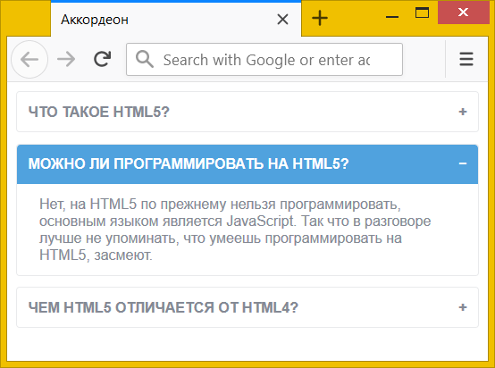

Аккордеон меню
Аккордеон представляет собой список с раскрывающимся содержимым (рис. 1). Удобен для создания больших меню из-за компактности, а также для блоков вопросов и ответов. Название произошло от музыкального инструмента, который напоминает своим видом.

Рис. 1. Вид аккордеона
Есть два типа аккордеон-меню.
- При раскрытии любого пункта списка открытое содержимое закрывается; по своему действию это похоже на вкладки.
- Можно раскрывать любой пункт списка, остальные пункты при этом не закрываются.
Поскольку аккордеон своей работой напоминает вкладки, то мы можем использовать тот же самый код HTML, что и при создании вкладок (пример 1). Для первого типа аккордеона вставляем <input type="radio">, который позволяет выбрать лишь один пункт, а для второго типа <input type="checkbox"> — с его помощью можно раскрывать и закрывать произвольное число пунктов.
Пример 1. Код отдельного пункта аккордеона
<div class="tab">
<input type="radio" id="tab1" name="tab-group">
<label for="tab1" class="tab-title">Заголовок пункта</label>
<section class="tab-content">Содержимое</section>
</div>Не забудьте, что для каждого <input> надо добавить своей уникальный id, а его значение затем вставить в атрибут for у расположенного ниже элемента <label>.
Алгоритм создания аккордеона повторяет шаги при создании вкладок. Сперва мы прячем <input> и содержимое через свойство display со значением none.
.tab input, .tab-content { display: none; }Затем с помощью псевдокласса :checked показываем содержимое, задавая свойству display значение block.
:checked ~ tab-content { display: block; }Для разнообразия справа от заголовка добавим символ плюса, он будет показывать пользователю что пункт раскрывается; при открытии пункта символ плюса меняем на минус. Оба действия делаются через псевдоэлемент ::after и свойство content, в значении которого пишем текст. При желании плюс и минус можно поменять на что-то другое, к примеру, на стрелки.
.tab-title::after { content: '+'; }
:checked + .tab-title::after { content: '−'; }Чтобы пользователь понимал, что на пункты списка можно щёлкать, изменим вид курсора на «руку» при наведении на заголовок.
.tab-title { cursor: pointer; }В примере 2 показан набор вопросов и ответов в виде аккордеона. В свёрнутом состоянии всё это выглядит компактно, каждый вопрос можно разворачивать и сворачивать.
Пример 2. Создание аккордеона
<!DOCTYPE html>
<html>
<head>
<meta charset="utf-8">
<title>Аккордеон</title>
<style>
.tab input, .tab-content { display: none; }
.tab {
font: 0.8rem/1.2 Arial, sans-serif; /* Параметры шрифта */
border: 1px solid #e9eaec; /* Параметры рамки */
border-radius: 3px; /* Скругляем уголки */
color: #848994; /* Цвет текста */
margin-bottom: 10px; /* Расстояние между пунктами */
}
.tab-title {
padding: 10px; /* Поля вокруг текста */
display: block; /* Блочный элемент */
text-transform: uppercase; /* Все буквы заглавные */
font-weight: bold; /* Жирное начертание */
cursor: pointer; /* Вид курсора */
}
.tab-title::after {
content: '+'; /* Выводим плюс */
float: right; /* Размещаем по правому краю */
}
.tab-content {
padding: 10px 20px; /* Поля вокруг текста */
}
.tab :checked + .tab-title {
background-color: #50a2de; /* Цвет фона */
border-radius: 3px 3px 0 0; /* Скругляем уголки */
color: #fff; /* Цвет текста */
}
.tab :checked + .tab-title::after {
content: '−'; /* Выводим минус */
}
.tab :checked ~ .tab-content {
display: block; /* Показываем содержимое */
}
</style>
</head>
<body>
<div class="accordion">
<div class="tab">
<input type="checkbox" id="tab1" name="tab-group">
<label for="tab1" class="tab-title">Что такое HTML5?</label>
<section class="tab-content">
<p>Под HTML5 обычно подразумевают два разных понятия:</p>
<ul>
<li>Это язык разметки документа, пришедший на смену HTML4 и XHTML.</li>
<li>Это набор веб-технологий, позволяющий делать на сайте
всякие интересные штуки.</li>
</ul>
</section>
</div>
<div class="tab">
<input type="checkbox" id="tab2" name="tab-group">
<label for="tab2" class="tab-title">Можно ли программировать на HTML5?</label>
<section class="tab-content">
Нет, на HTML5 по прежнему нельзя программировать, основным языком является JavaScript.
Так что в разговоре лучше не упоминать, что умеешь программировать на HTML5, засмеют.
</section>
</div>
<div class="tab">
<input type="checkbox" id="tab3" name="tab-group">
<label for="tab3" class="tab-title">Чем HTML5 отличается от HTML4?</label>
<section class="tab-content">
В HTML5 добавлены новые элементы, вроде <header>, <footer>,
<aside>, <article>, появилась долгожданная поддержка аудио,
видео и многое другое.
</section>
</div>
</div>
</body>
</html>Решение с использованием псевдокласса :checked получается достаточно гибким и легко настраиваемым под свои нужды. Так, можно заранее сделать отдельные пункты открытими, добавив к <input> атрибут checked. Если требуется поменять поведение аккордеона, чтобы открытым был только один пункт, то нужно поменять значение атрибута type на radio. Сам CSS остаётся исходным и какие-либо правки вносить в него не понадобится.
См. также
- <label>
- content
- quotes
- relative и absolute
- Вкладки на CSS
- Выпадающее меню
- Добавление тени
- Использование :checked
- Не только текст
- Очистка float
- Подробнее о позиционировании
- Подсказка в поле формы
- Псевдокласс :checked
- Псевдоэлемент ::after
- Псевдоэлементы
- Псевдоэлементы ::after и ::before
- Спойлер
- Стилизация переключателей
- Стилизация флажков
- Формы в HTML
- Элемент label